929 · חוויית לימוד אישית18 שקפים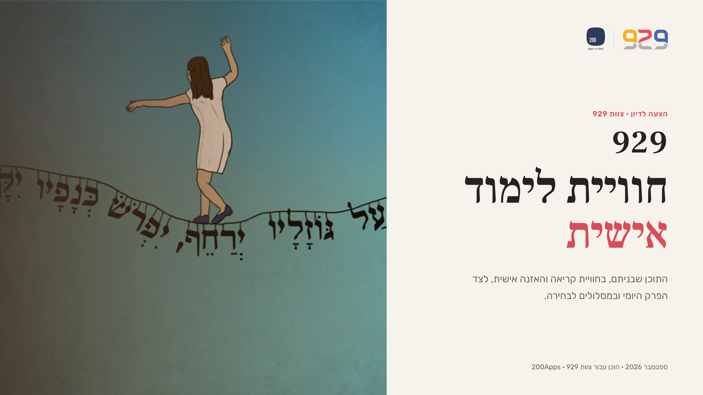
01 הצעה לדיון · צוות 929 929חוויית לימודאישית
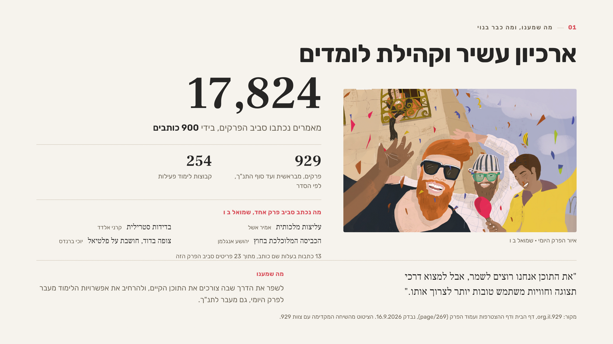
02 01 מה שמענו, ומה כבר בנוי ארכיון עשיר וקהילת לומדים
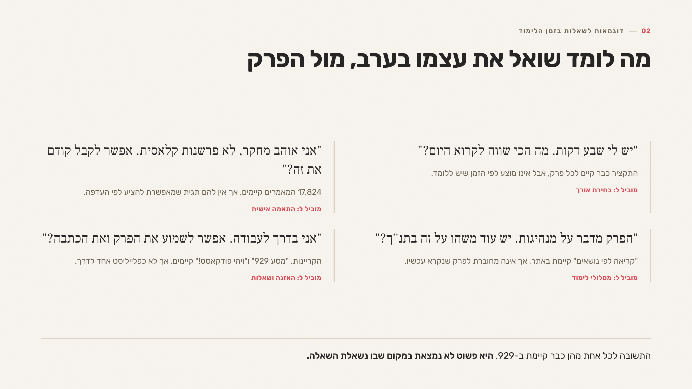
03 02 דוגמאות לשאלות בזמן הלימוד מה לומד שואל את עצמו בערב, מול הפרק
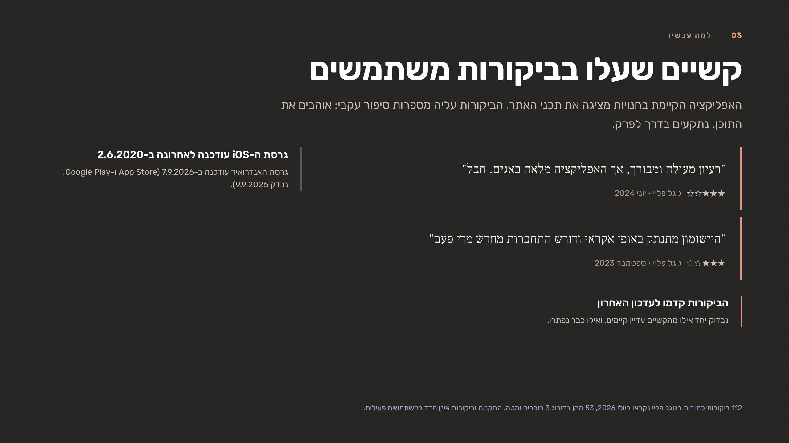
04 03 למה עכשיו קשיים שעלו בביקורות משתמשים
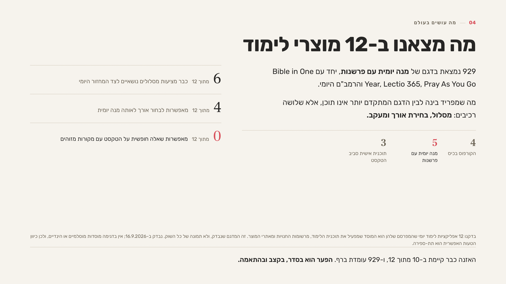
05 04 מה עושים בעולם מה מצאנו ב-12 מוצרי לימוד
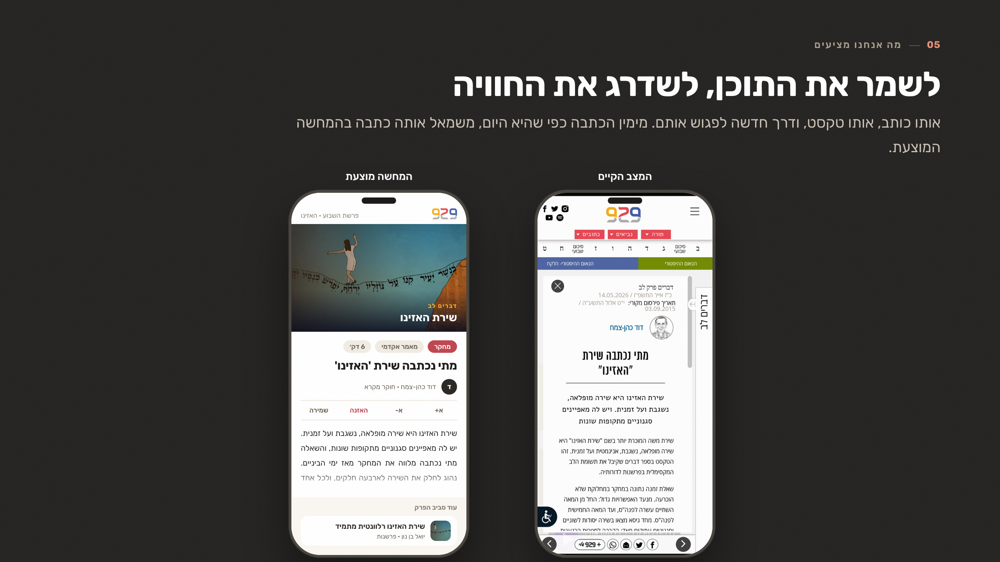
06 05 מה אנחנו מציעים לשמר את התוכן, לשדרג את החוויה
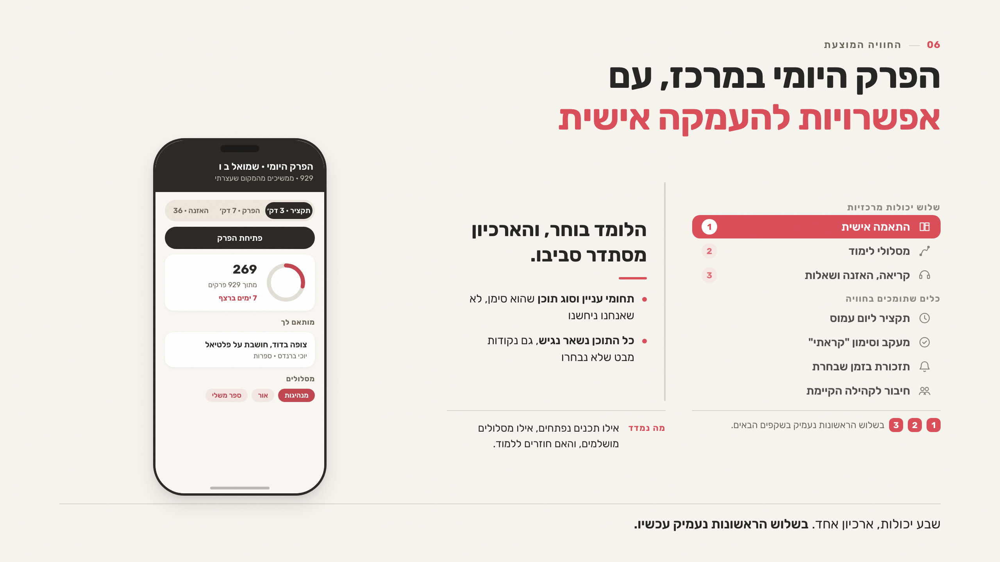
07 06 החוויה המוצעת הפרק היומי במרכז, עם אפשרויות להעמקה אישית
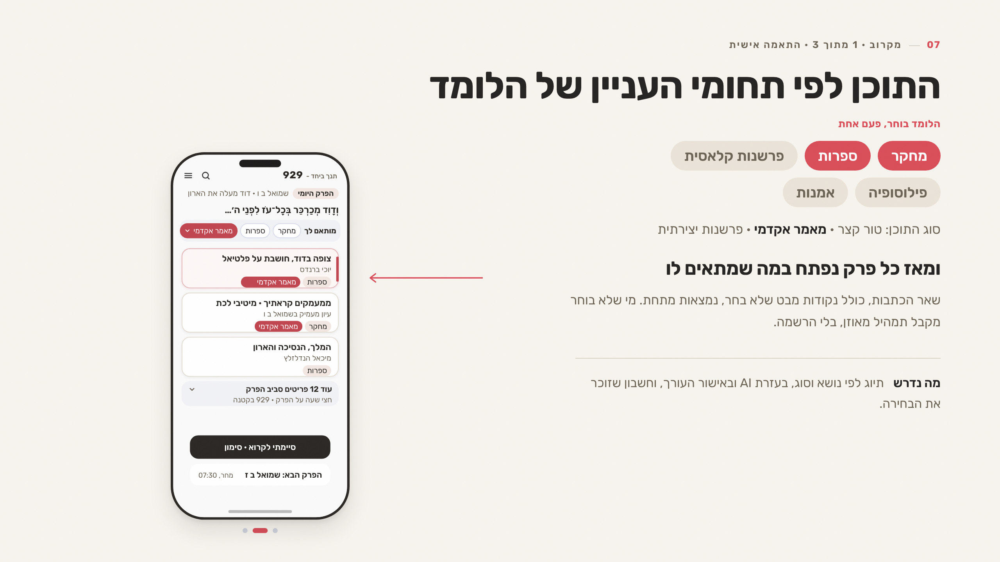
08 07 מקרוב · 1 מתוך 3 · התאמה אישית התוכן לפי תחומי העניין של הלומד
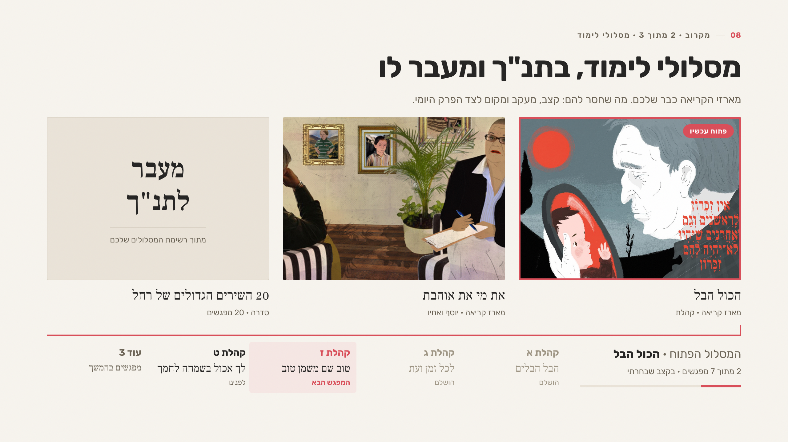
09 08 מקרוב · 2 מתוך 3 · מסלולי לימוד מסלולי לימוד, בתנ"ך ומעבר לו
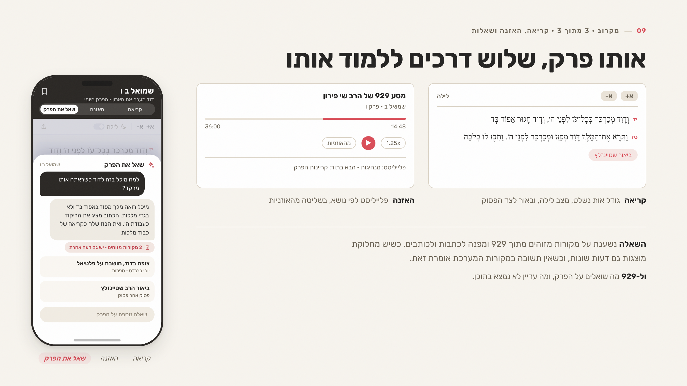
10 09 מקרוב · 3 מתוך 3 · קריאה, האזנה ושאלות אותו פרק, שלוש דרכים ללמוד אותו
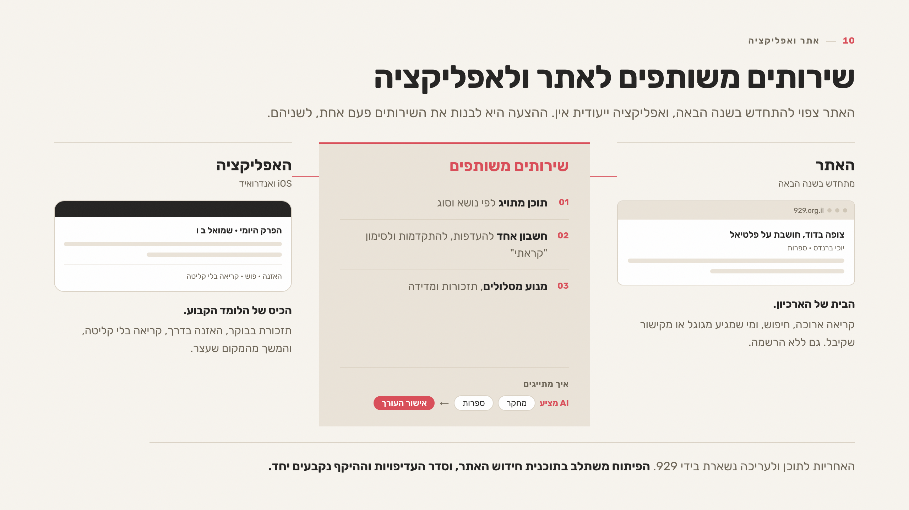
11 10 אתר ואפליקציה שירותים משותפים לאתר ולאפליקציה
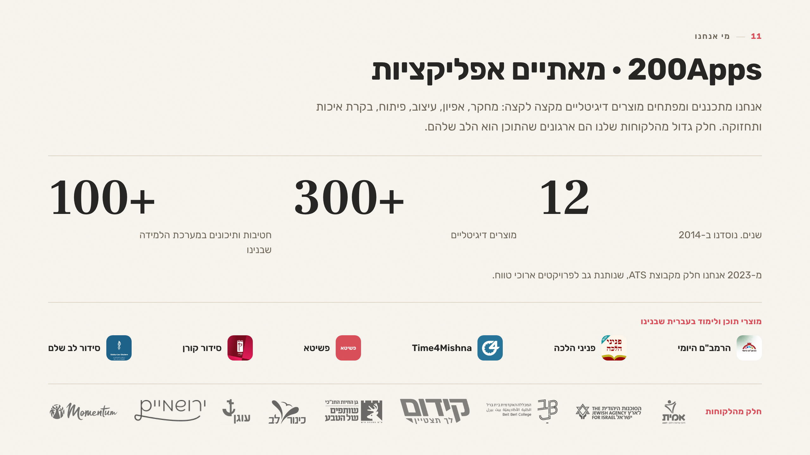
12 11 מי אנחנו 200Apps · מאתיים אפליקציות
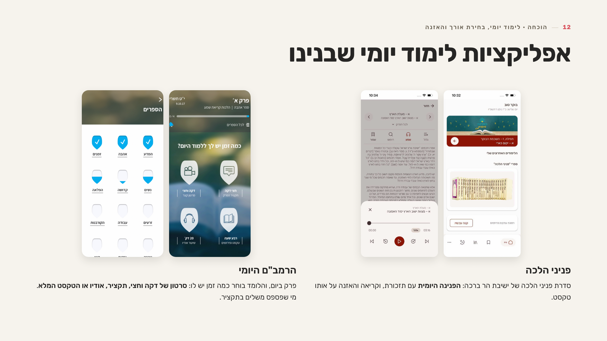
13 12 הוכחה · לימוד יומי, בחירת אורך והאזנה אפליקציות לימוד יומי שבנינו
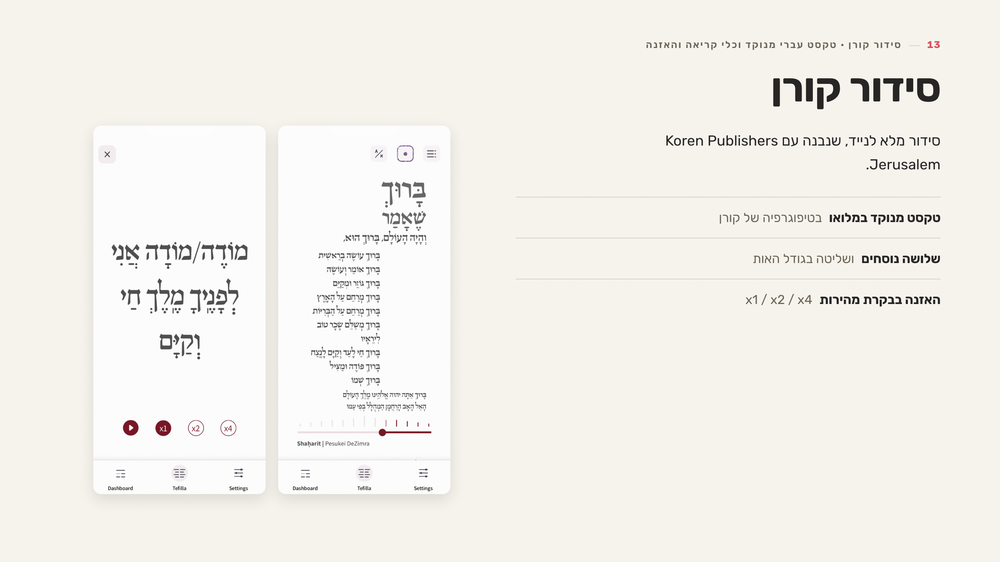
14 13 סידור קורן · טקסט עברי מנוקד וכלי קריאה והאזנה סידור קורן
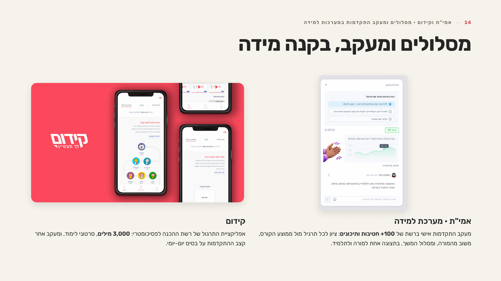
15 14 אמי"ת וקידום · מסלולים ומעקב התקדמות במערכות למידה מסלולים ומעקב, בקנה מידה
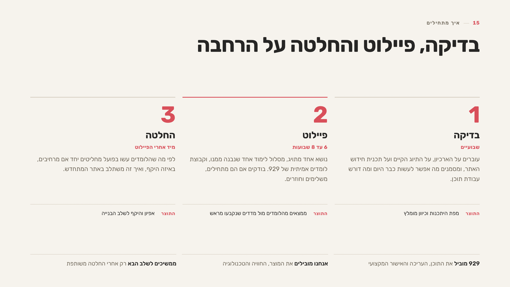
16 15 איך מתחילים בדיקה, פיילוט והחלטה על הרחבה
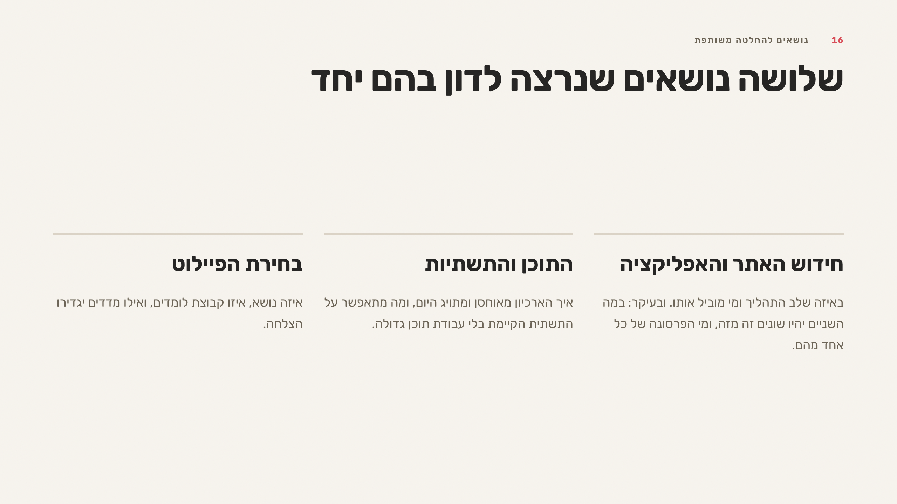
17 16 נושאים להחלטה משותפת שלושה נושאים שנרצה לדון בהם יחד
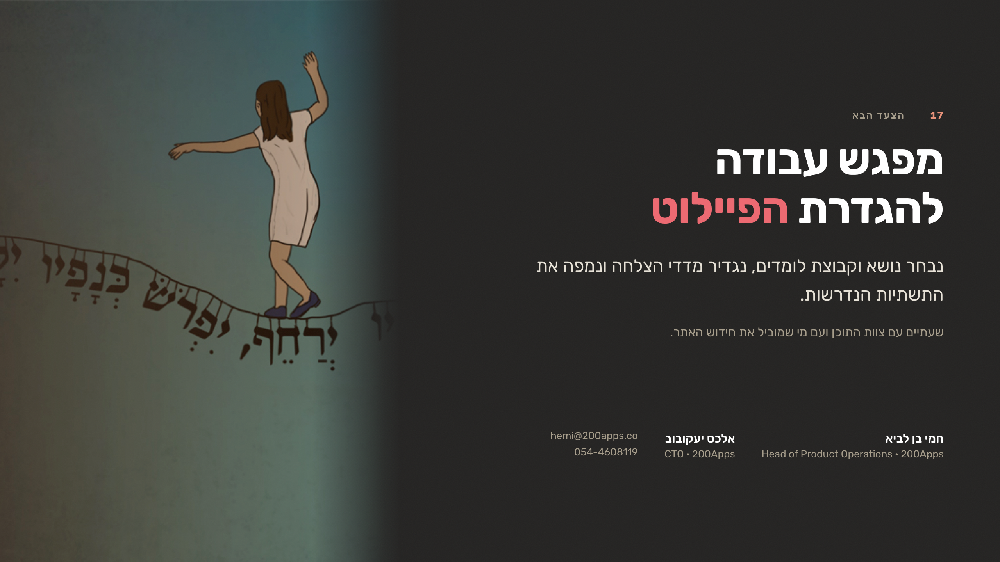
18 17 הצעד הבא מפגש עבודהלהגדרת הפיילוט